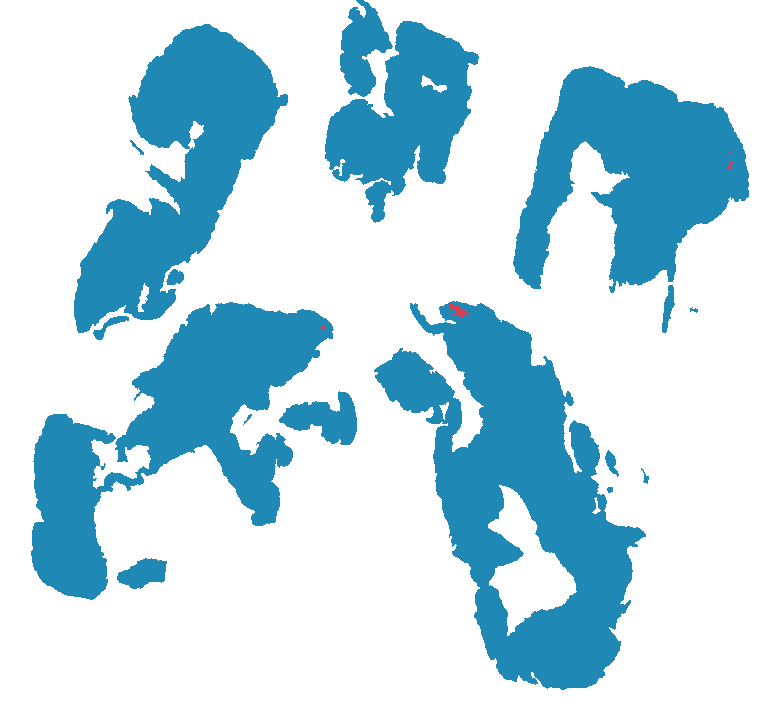
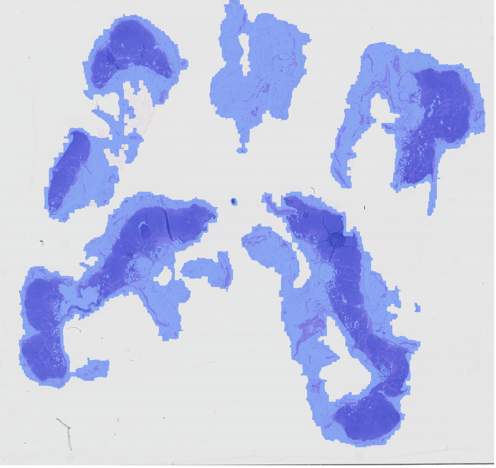

This slide is held out from the tumor_084 fit, but its expert annotation was publicly visible before this rerun. This is retrospective and reference-visible. The source is from the public CAMELYON16 training release, not the challenge hidden test.
This page reports the original cutoff. See the two-slide recall review for the spatially validated cutoff and a comparison on the same reviewed tissue.
Metastasis agreement on official known pixels
Native prediction is primary. Shared-support output is a sensitivity analysis on the same 10,141,104 official known-pixel denominator. Code 0 is unscored.
| Measure | Native | Shared support |
|---|---|---|
| Metastasis IoU | 4.9% | 2.3% |
| Dice | 9.3% | 4.5% |
| Balanced accuracy | 52.5% | 51.2% |
| Recall | 5.1% | 2.3% |
| False-positive tissue area | 0.0076 mm² | 0.0025 mm² |
Slide-level presence rule: Bora calls this slide negative because no positive component reaches 0.01 mm²; the official reference is positive. This is a false-negative slide-level decision under the frozen rule.
Tissue and annotation views



Inspect the saved result
Download exact Bora GeoJSON · Download audited score receipt · Official source TIFF. The full source image is hosted by CAMELYON16 and is not redistributed here.
The saved GeoJSON is registered to calibrated source pixel edges. The overlay is a compact overview; close inspection should use the exact vector and source image. The fitted mask and metrics were independently audited, including TIFF/BW pixel identity, support, and GeoJSON round-trip.
Other methods
Class-aware U-Net, DeepLabV3+, U-Net-box-guided MedSAM and fixed-prompt VISTA-PATH are pending in this tumor_084-only rerun. Earlier tumor_093-fit results are preserved separately and are not copied into this comparison.